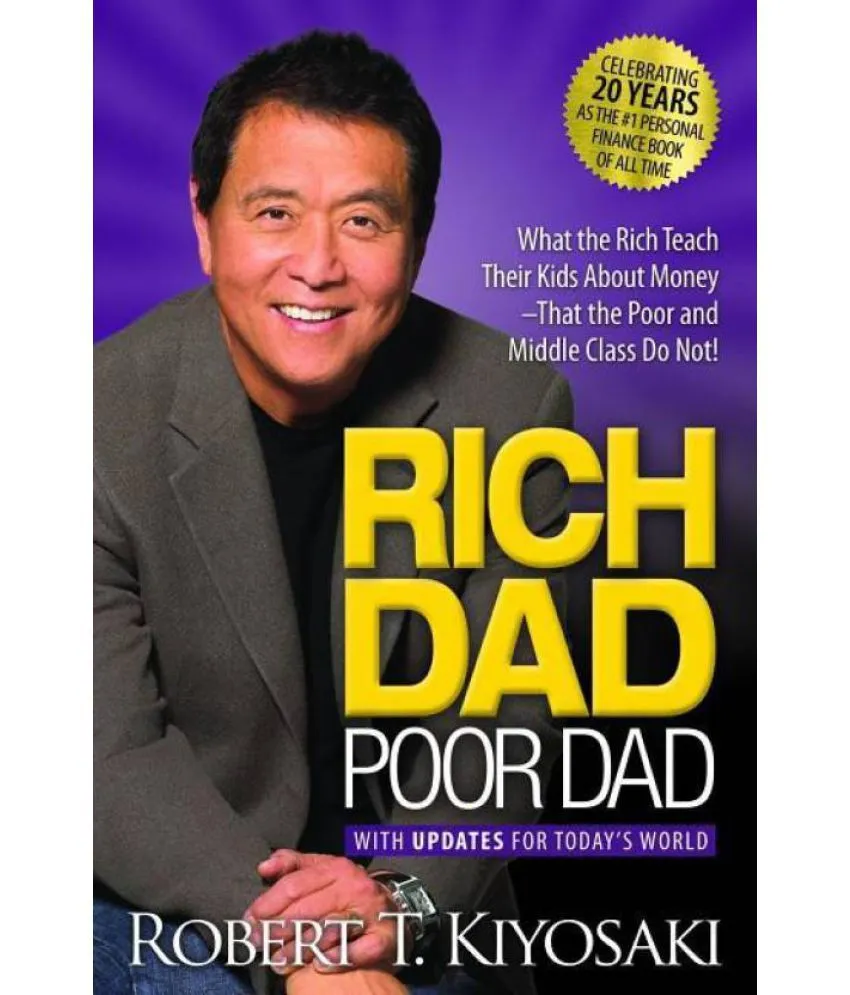

Interesting fact about me is I hate watching movies these days!!! From childhood I have been a fan of movies and I used to watch them a lot. But later I realised that I spent all my life wasting time watching movies and their illusions.
This is the first book which I read. It is pretty good in explaining how to save money and invest in some assets not in liabilities. Once you read it you will understand the key to become rich is investing on something that gives you long turn returns.
| Country | Reason to visit | Days |
|---|---|---|
| India | There are some parts of the world that, once visited, get into your heart and won’t go. For me, India is such a place. When I first visited, I was stunned by the richness of the land, by its lush beauty and exotic architecture, by its ability to overload the senses with the pure, concentrated intensity of its colors, smells, tastes, and sounds… I had been seeing the world in black & white and, when brought face-to-face with India, experienced everything re-rendered in brilliant technicolor | 20 |
| Singapore | Singapore packs a surprisingly massive number of attractions: verdant parks, world-class zoos, luxurious hotels, historical structures, and deliciously cheap eats, all in a land area not much bigger than El Paso, Texas. | 18 |
| Switzerland | Besides cheese and milk chocolate, which Switzerland makes the best of the best of, the traditional cuisine will surprise you, not only with the ingredients of the dishes but also with a spectacular presentation of them on a plate. The foods can be described as descendants of Canton’s French, Italian, and Germanic dishes with a unique twist, which is most commonly achieved through adding home recipe spices, naturally aged ingredients, and a frequent contrast between sweet and light-bitterness that adds to the exquisite flavors. If you take interest in culinary arts or want to try new delicacies, then Switzerland has you covered, anywhere from casual cafes to Michelin star restaurants. | 14 |
| Japan | A country steeped in ancient traditions, bestrewn with ultra-modern cities and brimming with spectacular natural beauty. Climb the futuristic skyscrapers of Tokyo, revel in the grandeur of Mt. Fuji, wrap yourself in the sacred atmosphere of age-old shrines and temples, and fall in love with the seasons. | 16 |
How To Generate a Random Color in JavaScript Best way to generate a random color in javascript? [closed]
function get_random_color()
{
var color = "";
for(var i = 0; i < 3; i++) {
var sub = Math.floor(Math.random() * 256).toString(16);
color += (sub.length == 1 ? "0" + sub : sub);
}
return "#" + color;
}
function get_rand_color()
{
var color = Math.floor(Math.random() * Math.pow(256, 3)).toString(16);
while(color.length < 6) {
color = "0" + color;
}
return "#" + color;
}
Link to the above code in stackoverflow